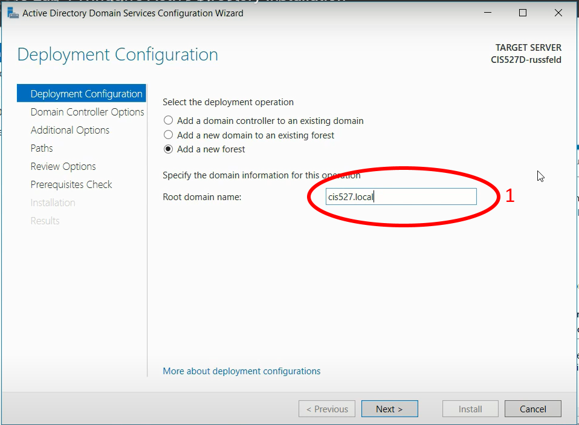
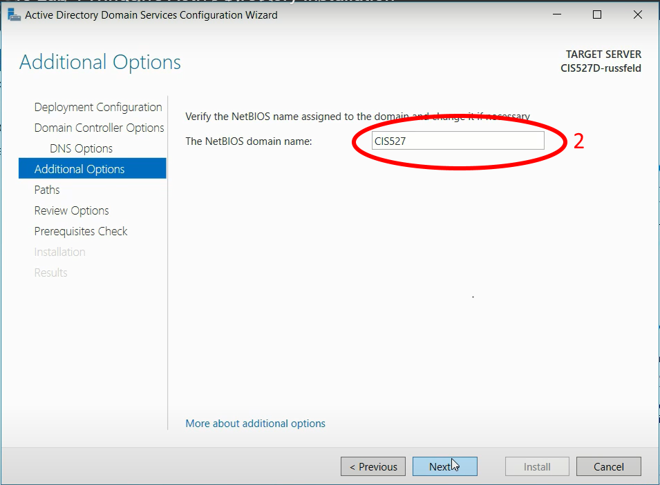
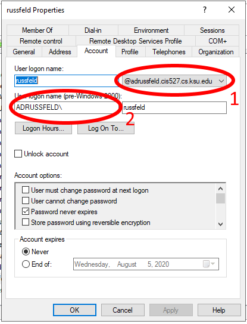
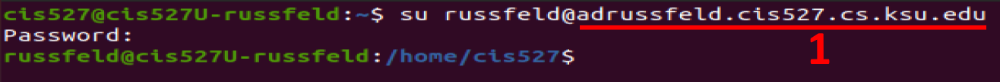
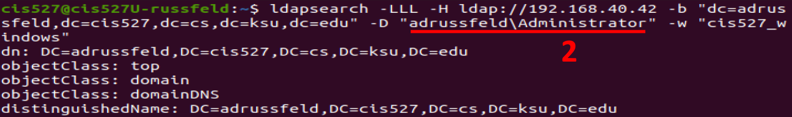

It appears that I have managed to confuse lots of people with the Windows AD portion of this lab. That’s not my intent, and any confusion is totally my fault here. This is mostly due to the fact that I reused an older video showing how to set up an Active Directory server and not clearly describing how things should be changed. I’ll do my best to clarify what you need to know and how you can adapt any existing setup you may have so that it works.
When configuring an Active Directory (AD) domain, there are two important settings: the root domain name (numbered 1 in the screenshots below) and the NETBIOS domain name (numbered 2 in the screenshots below).
In an ideal setup, those names are closely related. Typically, if the root domain name is ad.cis527.cs.ksu.edu then the NETBIOS domain name would be ad - the first part of the root domain name. In most cases, you should not change the NETBIOS domain name from the default that is proposed by the setup process. (If you did, that’s fine - keep reading!)
In the video for setting up an AD domain, I used a simplified root domain name cis527.local, which meant that my NETBIOS domain name would be cis527 as shown in the screenshots below:


For the lab assignment itself, I give you a more concrete desired root domain name of ad.cis527<your eID>.cs.ksu.edu. However, I do not specify the NETBIOS domain name, which should default to ad. However, you can freely change it, and I believe that the video is leading many students to change that value to either cis527 or cis527<your eID>. To be clear, you should not change the NETBIOS domain name at this step - whatever is proposed by the configuration wizard is correct.
If you’ve changed this, that’s fine! You’ll just have to adapt a couple of things further down the line.
To see how your domain is set up, open the Active Directory Users and Computers tool in your Windows Server VM, and find the user you created in the Users folder and open it. There should be an Account tab that looks like the following screenshot (this is from a different VM setup, so the domain names are purposefully different than what the lab specifies):

In that screenshot, you can clearly see the root domain name labelled with the number 1, which is adrussfeld.cis527.cs.ksu.edu, and the NETBIOS domain name labelled with number 2 is ADRUSSFELD. This is the VM that I used for creating the Linux Client on Windows Domain video that was new for Summer 2020. So, make note of both of these settings in your AD configuration, as you’ll need them when trying to log on to the domain or run commands.
When referencing usernames on an AD domain, there are two basic methods:
<username>@<root domain name><NETBIOS domain name>\<username>So, when I want to log in as that user on Ubuntu, I would use method 1 with the root domain name (this is before we change the sssd configuration file to not require the full domain name):

However, if I want to do the ldapsearch command to search the Windows AD, I’ll need to use method 2 with the NETBIOS domain name:

So, you should be able to adapt to whichever method is required, making changes where necessary to make the commands work.
Q: What if my root domain name and NETBIOS domain name are different? For example, my root domain name is ad.cis527<eID>.cs.ksu.edu but I set my NETBIOS domain name to cis527<eID>.
As far as I can tell, you should still be able to complete Lab 4 with an AD domain configured in this way. The only issues you may run into are when using the realm join command and the ldapsearch commands on Ubuntu. You’ll have to pay close attention to which method is being used, and adjust the commands as necessary to fit the situation. So far, I’ve worked with at least two students who ran into this issue but were able to get it to work with minimal problems.
It may also be very important to make sure that both your Windows client and Ubuntu client are configured to use the Windows AD server as the first DNS entry. I usually just set a static DNS entry on each of those systems before joining the domain as directed in the video - in the real world you’d have your DHCP server do this for you.